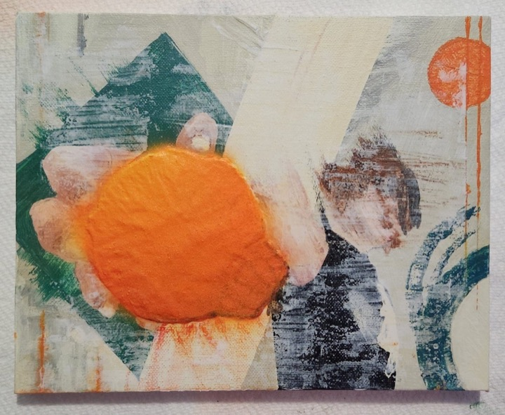
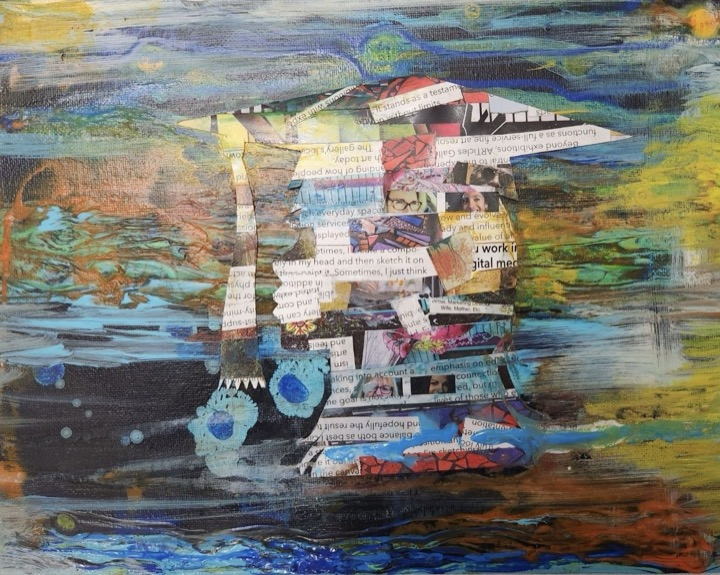
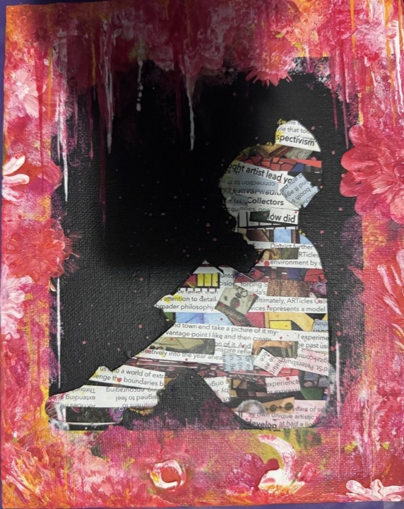
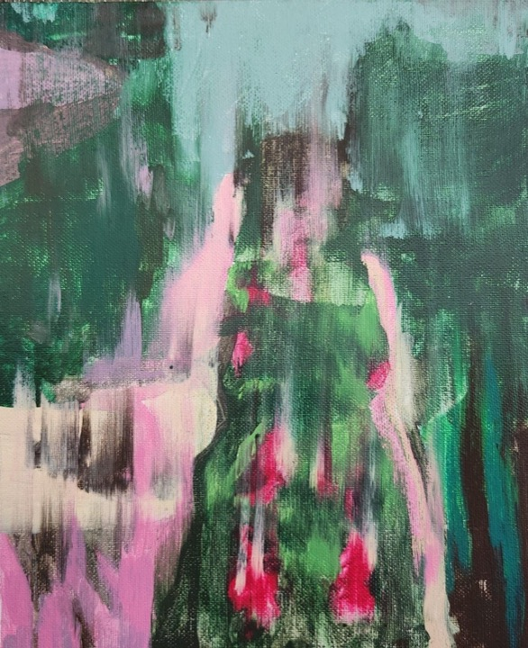
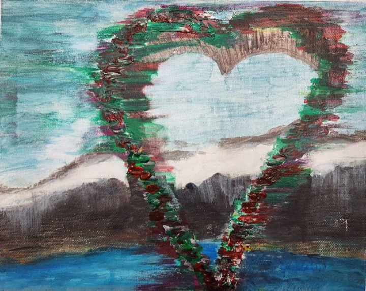

Fading Memory
The series explores moments when an image in memory loses its sharpness but still holds our attention. I want to understand why memory preserves certain features with particular clarity, and how a small detail, a scent, or the echo of a voice can bring the past back to us, placing us once again in scenes from a time gone by.
The paintings reveal a peculiar quality of memory: a minor detail can remain clearer than the person or place it belonged to. And at certain moments in life, our memory fills in the missing parts of the past while replacing them with things that never existed.
Perhaps memory is a special human gift that distinguishes us from artificial intelligence and gives us an evolutionary advantage.

Childhood Home
Read description
Something about a stranger hurrying past seems familiar: the posture, the hands in the pockets, the glance. And suddenly that very apartment building from childhood, so difficult to recall for many years, rises to the surface of memory. A single detail can bring up a whole layer of memories. Such a memorable moment belongs to an ordinary day, and that is precisely why it feels personal.



Endowment
Read description
Sometimes a person's face fades from memory over time, but what we learned from that person remains part of every day. We use the skill, begin to think of it as our own, and even pass it on to others. Sometimes what we know how to do thanks to someone is what describes that person most accurately in our memory.



Graduation
Read description
A graduation photograph captures a personal event in a group image and seeks to recall a memorable day that stays with us for the rest of our lives. What did you dream about that day? What did you want to achieve, and what path did you want to take?
The collage gives the form clarity, piecing it together from fragments of our plans and scraps of the life ahead. The painting shows how selective memory is: the ceremony remains recognizable, but what that day meant to one person slips away.



Memory Storages
Read description
Memory manages to hold all the important and incidental knowledge we acquire over a lifetime. Some things we read stay in view for years, others return without warning, and there are memories we spend years trying in vain to retrieve from the depths of our minds. Then there are things we know that lie unused somewhere inside us for our entire lives.
I wonder how these countless stores of information are organized in memory, and why some things are so hard to recall while other information surfaces when we do not need it. Are we really in control of our memory if we do not even understand how it is organized?



Random Detail
Read description
The face dissolves into horizontal brushstrokes, and only the red spots on the green dress continue to give shape to the figure. The dress becomes a hook by which we can bring the person back to mind.
A chance detail from a single moment can remain part of our image of a person for years. And perhaps, fifty years later, a husband will tell his beloved wife that he still remembers the dress she wore the day they first met.



Signs
Read description
The heart-shaped outline makes the landscape feel emotionally familiar, and for a moment the place seems dear to us, even though we may be seeing it for the first time. The work explores how familiar signs steer our feelings and how easily we mistake the attachment we feel on looking for a quality of the place itself.